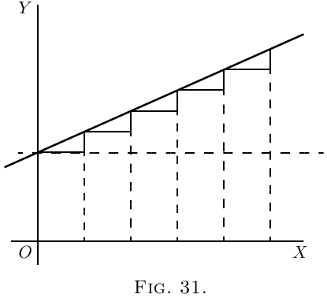
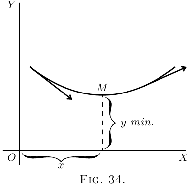
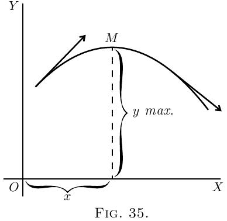

Suponha uma inclinação constante, como na Figura 31.
Aqui, $\dfrac{dy}{dx}$ tem valor constante.
Suponha, porém, um caso em que, como na Figura 32, a própria inclinação está se tornando maior para cima; então $\dfrac{d\left(\dfrac{dy}{dx}\right)}{dx}$, isto é, $\dfrac{d^2y}{dx^2}$, será positiva.
Se a inclinação está se tornando menor conforme você avança para a direita
(como na Figura 14), ou como na Figura 33, então, mesmo
que a curva possa estar subindo, como a
mudança é de tal modo a diminuir sua inclinação, seu $\dfrac{d^2y}{dx^2}$ será
negativo.
É chegada a hora de iniciá-lo em outro segredo: como
saber se o resultado que você obtém ao
“igualar a zero” é um máximo ou um mínimo.
O truque é este: depois de ter diferenciado
(de modo a obter a expressão que você iguala a
zero), você então diferencia uma segunda vez, e observa
se o resultado da segunda diferenciação é
positivo ou negativo. Se $\dfrac{d^2y}{dx^2}$ resulta positivo, então
você sabe que o valor de $y$ que obteve era
um mínimo; mas se $\dfrac{d^2y}{dx^2}$ resulta negativo, então
o valor de $y$ que você obteve deve ser um máximo.
Essa é a regra.
  A razão disso deveria ser bem evidente. Pense
em qualquer curva que tenha um ponto de mínimo nela (como a
Figura 15), ou como a Figura 34, onde o ponto de
mínimo $y$ está marcado $M$, e a curva é côncava
para cima. À esquerda de $M$ a inclinação é para baixo,
isto é, negativa, e está se tornando menos negativa. À
direita de $M$ a inclinação se tornou para cima, e está
se tornando cada vez mais para cima. Claramente a mudança
de inclinação conforme a curva passa por $M$ é tal que
$\dfrac{d^2y}{dx^2}$ é positivo, pois sua operação, à medida que $x$ aumenta para
a direita, é converter uma inclinação para baixo em uma
para cima.
De modo semelhante, considere qualquer curva que tenha um ponto de máximo
nela (como a Figura 16), ou como a Figura 35, onde
a curva é convexa, e o ponto de máximo está
marcado $M$. Neste caso, conforme a curva passa por $M$
da esquerda para a direita, sua inclinação para cima é convertida
em uma inclinação para baixo ou negativa, de modo que neste
caso a “inclinação da inclinação” $\dfrac{d^2y}{dx^2}$ é negativa.
Volte agora aos exemplos do capítulo anterior
e verifique deste modo as conclusões a que se chegou quanto a
haver, em qualquer caso particular, um máximo
ou um mínimo. Você encontrará abaixo alguns exemplos
resolvidos.
(1) Encontre o máximo ou mínimo de (2) Encontre os máximos e mínimos da função
$y = x^3-3x+16$. (3) Encontre os máximos e mínimos de $y=\dfrac{x-1}{x^2+2}$. O denominador é sempre positivo, de modo que basta
averiguar o sinal do numerador.
Se pusermos $x = 2.73$, o numerador é negativo; o
máximo, $y = 0.183$.
Se pusermos $x=-0.73$, o numerador é positivo; o
mínimo, $y=-0.683$.
(4) A despesa $C$ de manusear os produtos de uma
certa fábrica varia com a produção semanal $P$
segundo a relação $C = aP + \dfrac{b}{c+P} + d$, onde
$a$, $b$, $c$, $d$ são constantes positivas. Para que produção
a despesa será menor? Como a produção não pode ser negativa, $P=+\sqrt{\dfrac{b}{a}} - c$.
(5) O custo total por hora $C$ de iluminar um edifício
com $N$ lâmpadas de certo tipo é Além disso, a relação que liga a vida média
de uma lâmpada à eficiência comercial com que ela
é operada é aproximadamente $t = mE^n$, onde $m$ e $n$ são
constantes que dependem do tipo de lâmpada.
Encontre a eficiência comercial para a qual o custo
total de iluminação será mínimo.
Isto é claramente para mínimo, pois Para um tipo particular de lâmpadas de $16$ velas,
$C_l= 17$ pence, $C_e=5$ pence; e verificou-se que
$m=10$ e $n=3.6$.
(2) Dado $y = \dfrac{b}{a}x - cx^2$, encontre expressões para $\dfrac{dy}{dx}$, e
para $\dfrac{d^2y}{dx^2}$, encontre também o valor de $x$ que torna $y$ um
máximo ou um mínimo, e mostre se é
máximo ou mínimo.
(3) Encontre quantos máximos e quantos mínimos
há na curva cuja equação é (4) Encontre os máximos e mínimos de (5) Encontre os máximos e mínimos de (6) Encontre os máximos e mínimos de (7) Encontre os máximos e mínimos de (8) Divida um número $N$ em duas partes de tal
modo que três vezes o quadrado de uma parte mais
duas vezes o quadrado da outra parte seja um
mínimo.
(9) A eficiência $u$ de um gerador elétrico em
diferentes valores de saída $x$ é expressa pela
equação geral: (10) Suponha-se que o consumo de
carvão de certo vapor possa ser representado pela
fórmula $y = 0.3 + 0.001v^3$; onde $y$ é o número de
toneladas de carvão queimadas por hora e $v$ é a velocidade
expressa em milhas náuticas por hora. O custo de
salários, juros sobre o capital e depreciação desse
navio são, juntos, por hora, iguais ao custo de
$1$ tonelada de carvão. Que velocidade tornará o custo total
de uma viagem de $1000$ milhas náuticas um mínimo?
E, se o carvão custa $10$ xelins por tonelada, a quanto
ascenderá esse custo mínimo da viagem?
(11) Encontre os máximos e mínimos de (12) Encontre os máximos e mínimos de (1) Máx.: $x = -2.19$, $y = 24.19$; mín.:, $x = 1.52$, $y = -1.38$.
(2) $\dfrac{dy}{dx} = \dfrac{b}{a} - 2cx$; $\dfrac{d^2 y}{dx^2} = -2c$; $x = \dfrac{b}{2ac}$ (um máximo).
(3) (a ) Um máximo e dois mínimos.
(b ) Um máximo. ($x = 0$; outros pontos irreais.)
(4) Mín.: $x = 1.71$, $y = 6.14$.
(5) Máx: $x = -.5$, $y = 4$.
(6) Máx.: $x = 1.414$, $y = 1.7675$.
Mín.: $x = -1.414$, $y = 1.7675$.
(7) Máx.: $x = -3.565$, $y = 2.12$.
Mín.: $x = +3.565$, $y = 7.88$.
(8) $0.4N$, $0.6N$.
(9) $x = \sqrt{\dfrac{a}{c}}$.
(10) Velocidade $8.66$ milhas náuticas por hora. Tempo gasto $115.47$ horas.
Custo mínimo £$112$. $12$s .
(11) Máx. e mín. para $x = 7.5$, $y = ±5.414$. (Ver exemplo
nº 10, aqui.)
(12) Mín.: $x = \frac{1}{2}$, $y= 0.25$; máx.: $x = - \frac{1}{3}$, $y= 1.408$.

$t$ é a vida média de cada lâmpada em horas,
$C_l =$ custo de reposição em pence por hora de uso,
$C_e =$ custo da energia por $1000$ watts por hora.
Exercícios X
(Recomenda-se plotar o gráfico
de qualquer exemplo numérico.)
(1) Encontre os máximos e mínimos de
\[
y = x^3 + x^2 - 10x + 8.
\]
Respostas